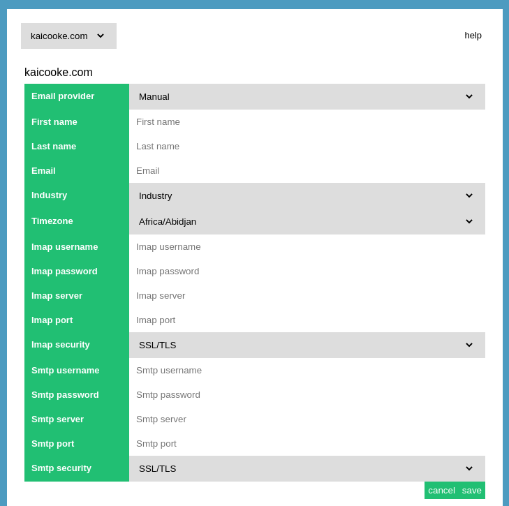
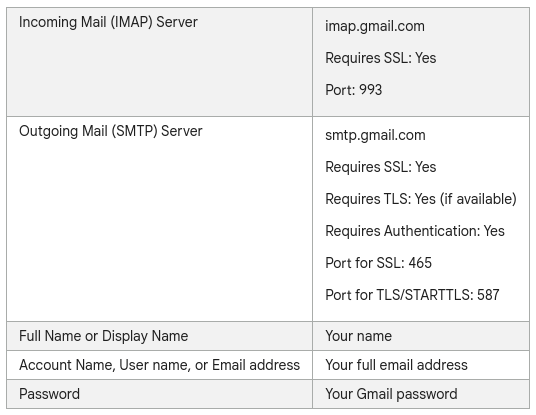

All email addresses that are in the warmup service can be used to mail from your Mautic server after you activated a Email Relay Server.
For Gmail accounts please use an application key. Google howto
To organise the inbox it is best to filter on te subject line of the campaign. We do not at any tracker token to the subject line to make the emails as natural as possible.
Most email providers have similar settings as Gmail seen below. If it is not clear please ask your email provider what your SMTP and IMAP settings are.
